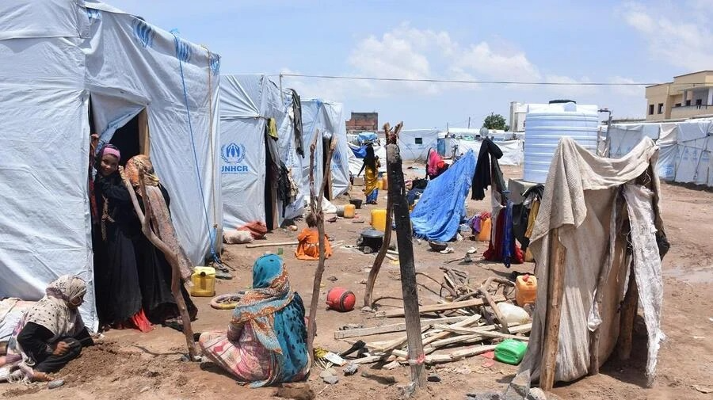
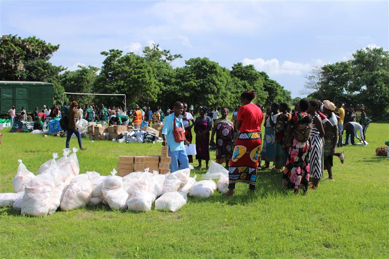
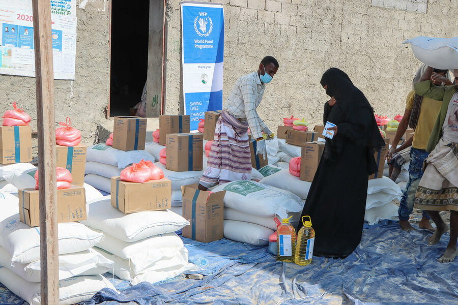
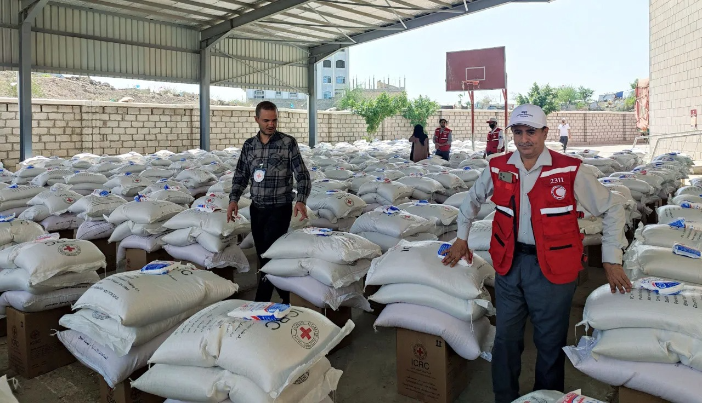
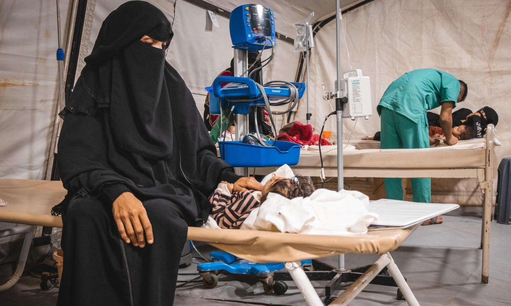
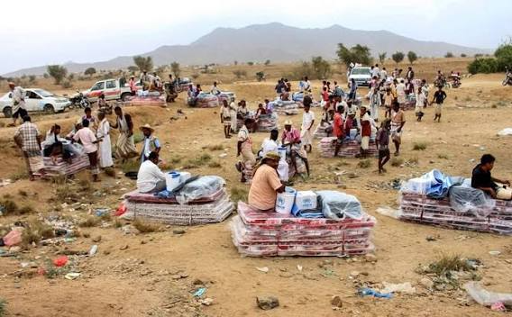
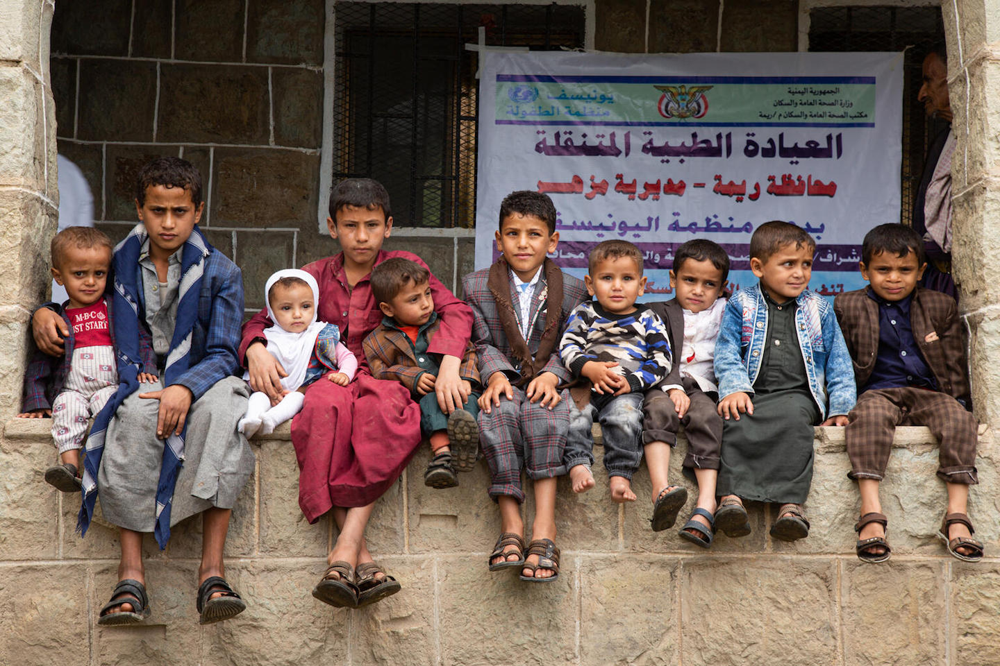
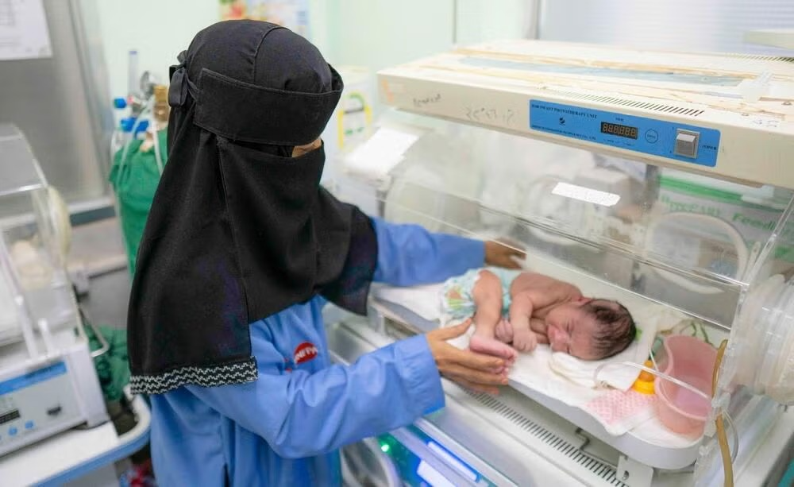
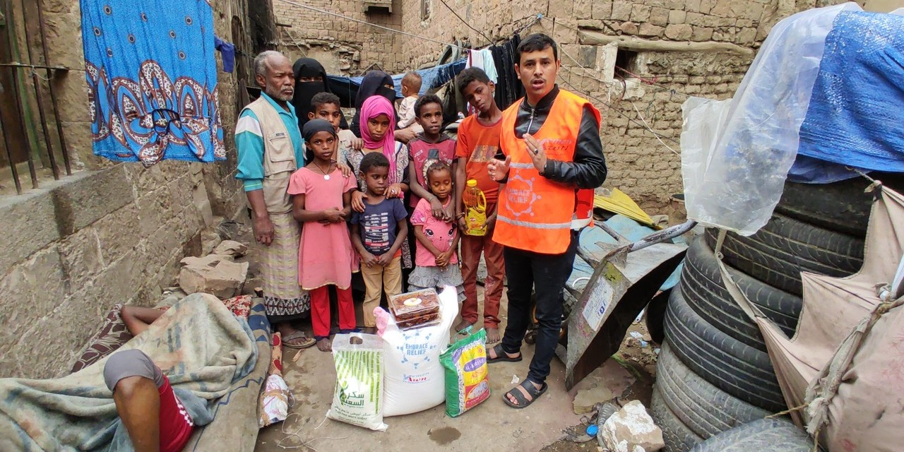
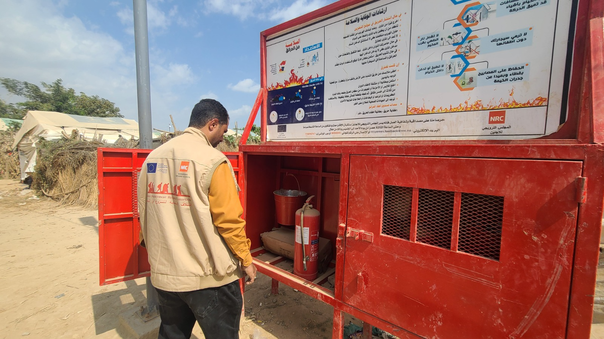

We only suggest trusted, official and verified websites

UNHCR works to protect and support refugees, displaced people, and other vulnerable communities affected by conflict and displacement in Yemen.
https://www.unhcr.org/yemen
UNICEF supports children and families in Yemen through programmes focused on health, nutrition, education, clean water, sanitation, protection, and emergency assistance.
https://www.unicef.org/yemen/
WFP provides food assistance and nutrition support to vulnerable people affected by conflict, food insecurity, displacement, and emergencies in Yemen.
https://www.wfp.org/emergencies/yemen-emergency
The ICRC provides humanitarian assistance and protection to people affected by armed conflict and works to support communities and restore essential services.
https://www.icrc.org/en/where-we-work/middle-east/yemen
MSF provides medical and humanitarian assistance to people affected by conflict and humanitarian crises, supporting healthcare facilities and communities across Yemen.
https://www.msf.org/yemen
The International Rescue Committee provides humanitarian assistance and support to vulnerable people affected by conflict and crisis in Yemen, including health, protection, and economic support.
https://www.rescue.org/country/yemen
Save the Children works to protect children and support families in Yemen through health, nutrition, education, child protection, and emergency response programmes.
https://www.savethechildren.net/yemen
UNFPA supports women, girls, and vulnerable communities in Yemen through reproductive health services, maternal care, protection services, and humanitarian assistance.
https://www.unfpa.org/yemen
CARE works with vulnerable communities in Yemen through humanitarian and development programmes addressing food security, health, livelihoods, water, and emergency needs.
https://www.care.org/our-work/where-we-work/yemen/
NRC provides humanitarian assistance and protection to displaced and vulnerable people in Yemen, supporting shelter, education, livelihoods, legal assistance, and other essential needs.
https://www.nrc.no/countries/middle-east/yemen/